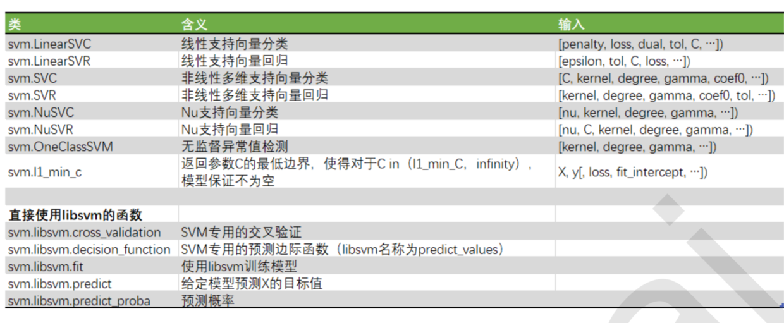
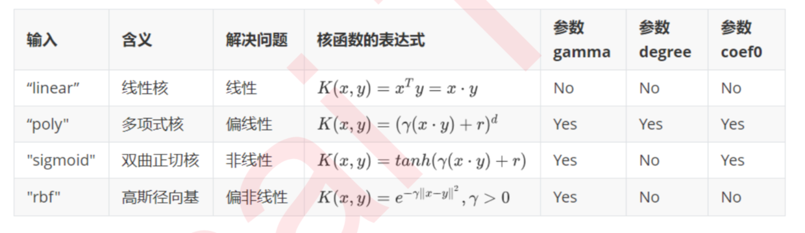
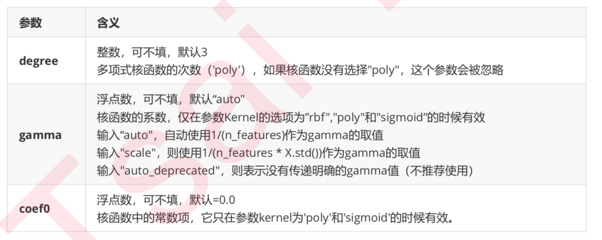

- 支持向量机算法功能
| 功能 | |
|---|---|
| 有监督学习 | 线性二分类与多分类(Linear Support Vector Classification) 非线性二分类与多分类(Support Vector Classification, SVC) 普通连续型变量的回归(Support Vector Regression) 概率型连续变量的回归(Bayesian SVM) |
| 无监督学习 | 支持向量聚类(Support Vector Clustering，SVC) 异常值检测(One-class SVM) |
| 半监督学习 | 转导支持向量机(Transductive Support Vector Machines，TSVM) |
从分类效力来讲，SVM在无论线性还是非线性分类中，都是明星般的存在。
支持向量机的分类方法，是在这组分布中找出一个超平面作为决策边界，使模型在数据上的分类误差尽量接近于小，尤其是在未知数据集上的分类误差(泛化误差)尽量小。决策边界一侧的所有点在分类为属于一个类，而另一侧的所有点分类属于另一个类。如果我们能够找出决策边界， 分类问题就可以变成探讨每个样本对于决策边界而言的相对位置，因此，支持向量机，就是通过找出边际最大的决策边界，来对数据进行分类的分类器。
in sklearn

svm.SVC(C=1.0,kernel=’rbf’,degree=3,gamma=’auto_deprecated’,coef0=0.0,shrinking=True, probability=False, tol=0.001, cache_size=200, class_weight=None, verbose=False, max_iter=-1, decision_function_shape=’ovr’, random_state=None)
参数
- kernel
- linear
- poly
- sigmoid
- rbf (good)
- degree
- gamma


1 | from sklearn.svm import SVC |
- 核函数
也叫做“核技巧”(Kernel Trick)，是一种能够使用数据原始空间中的向量计算来表示 升维后的空间中的点积结果的数学方式。 这个原始空间中的点积函数就被叫做“核函数”(Kernel Function)。
第一，有了核函数之后，我们无需去担心函数究竟应该是什么样，因为非线性SVM中的核函数都是正定核函数 (positive definite kernel functions)，他们都满足美世定律(Mercer’s theorem)，确保了高维空间中任意两个向量 的点积一定可以被低维空间中的这两个向量的某种计算来表示(多数时候是点积的某种变换)。
第二，使用核函数计算低维度中的向量关系比计算原本的要简单太多了。
第三，因为计算是在原始空间中进行，所以避免了维度诅咒的问题。